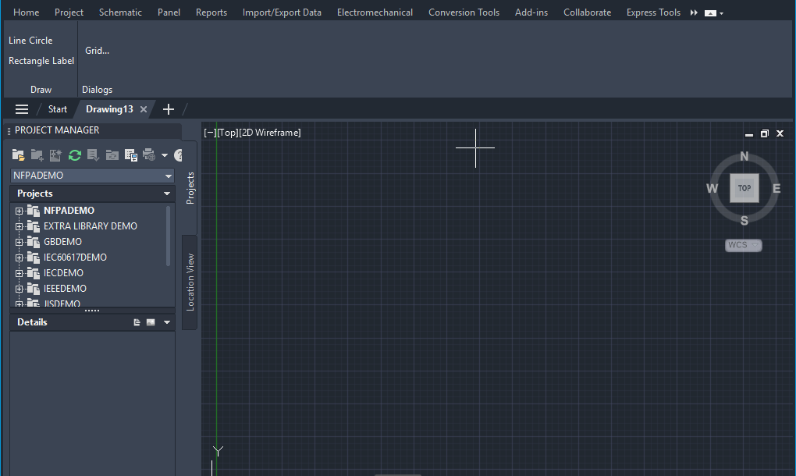
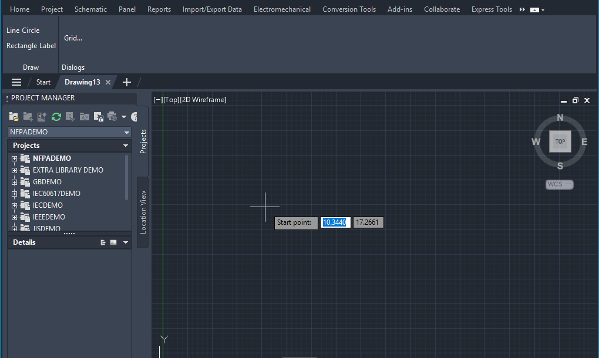
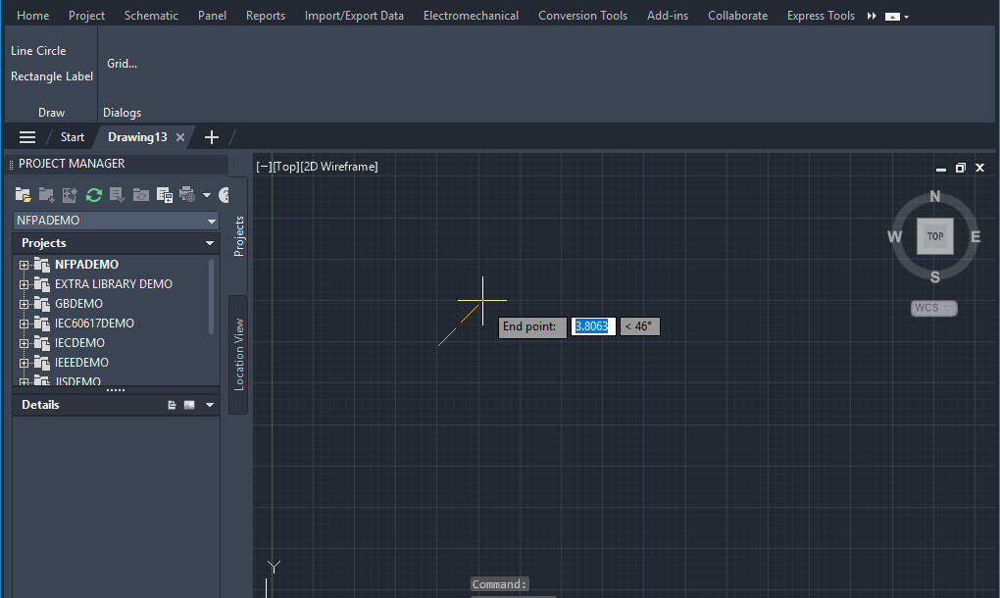
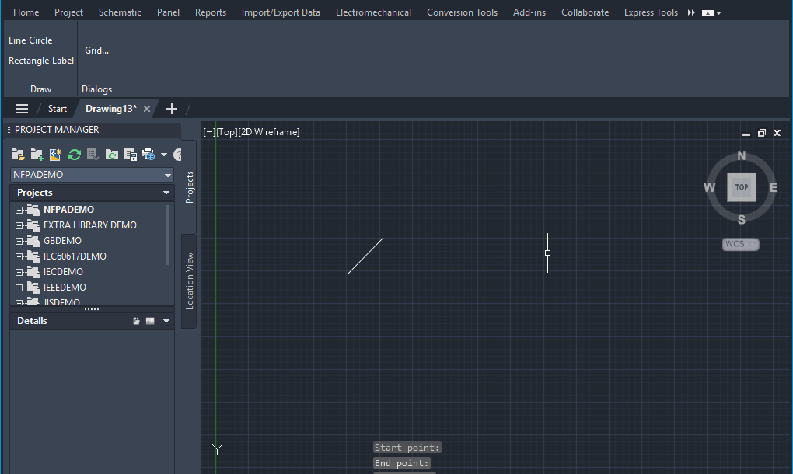
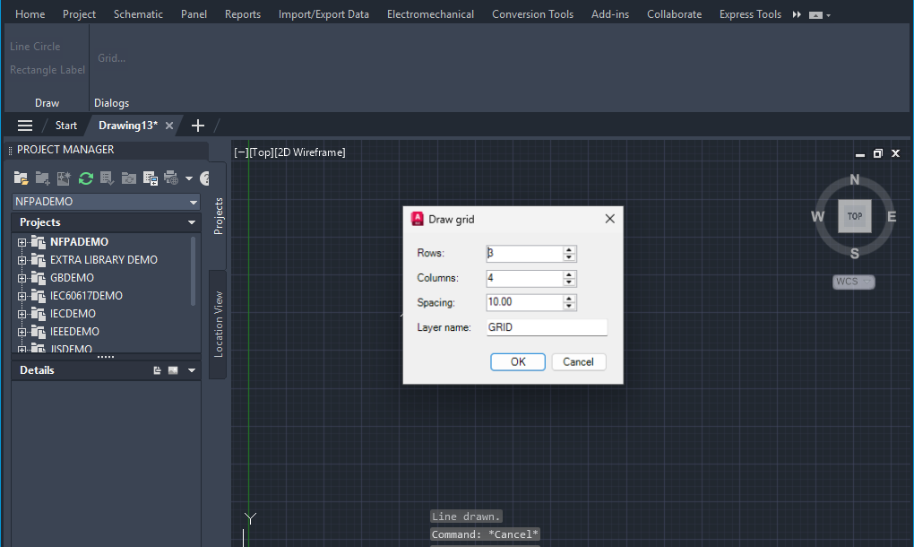
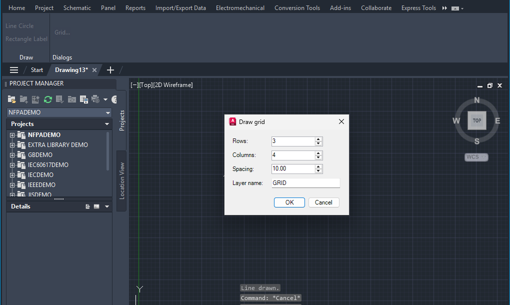
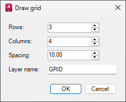
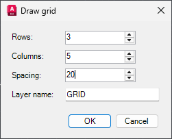
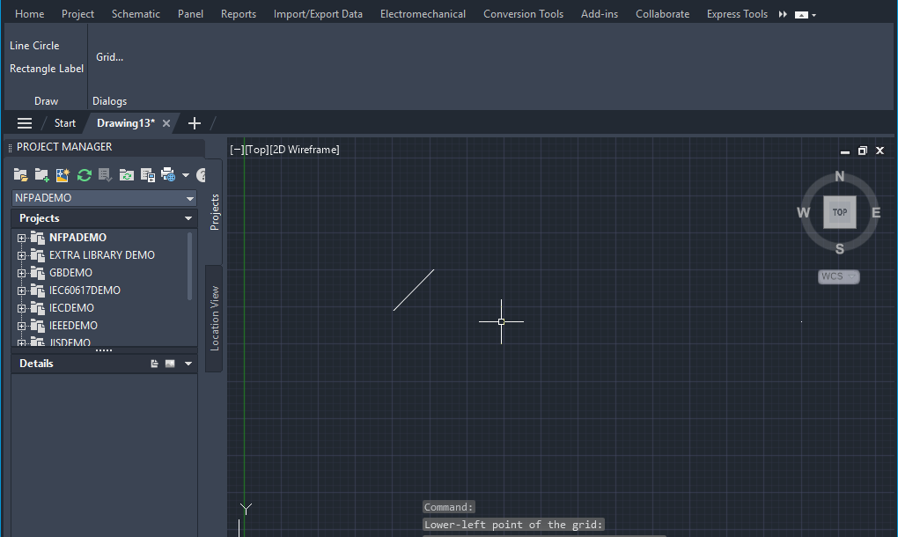
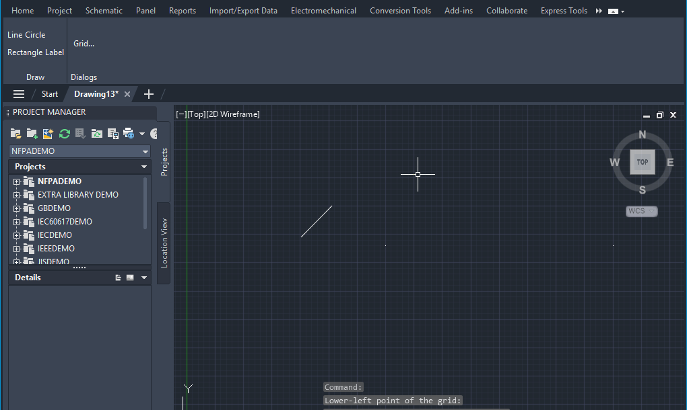

dtest
Recorded 2026-10-10, with AutoCAD 25.1.0.0, workspace ACADE & 2D Drafting & Annotation.
Start with: a new empty drawing.
Do the steps in order. A picture under a step shows what the screen looked like when the test was recorded.
Files in this folder
| File | What it is for |
|---|---|
Test steps.md | This page: the steps to follow by hand. It is written again each time the recording is processed, so do not edit it. |
recording.jsonl | The recording itself, one event per line. This is what Run test replays. |
screenshots | Pictures of the screen, named after the step that shows them. not-used holds the ones this page does not show. |
results | One file per automatic run, named by date and verdict (2026-10-10 03-15-02 PASS.json). latest.json is a copy of the newest. |
To run this test automatically: in AutoCAD open the Hotpaths tab, click Run test and pick recording.jsonl in this folder.
Steps
Click Samples › Draw › Line


Pick the Start point (recorded at 10.1073, 17.2661)

Pick the End point (recorded at 12.77, 19.9861)

Click Samples › Dialogs › Grid...


A dialog opens: Draw grid. Make these changes, then confirm:
Before:

- Set Columns to
5(was4) - Set Spacing to
20(was10.00)
After (what it should look like before you press OK):

- Set Columns to
Pick the Lower-left point of the grid (recorded at 17.5037, 16.4974)


Result
This recording has no checkpoints. Write down what you saw: pass if the steps ran as described, fail otherwise.
Like what you see?
Hotpaths writes a page like this for every test you record, and reruns the test with one click.